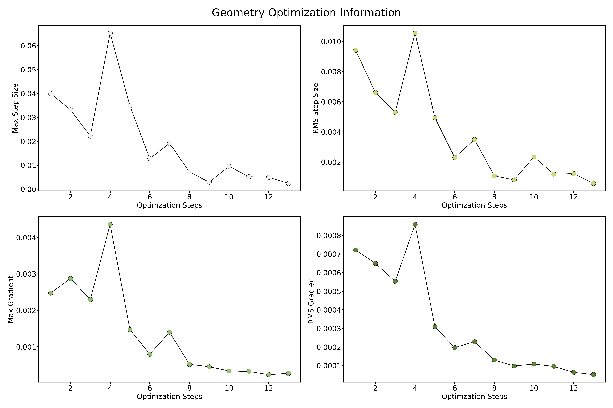

Manipulate CP2K Output/Log Files#
Basick Usage#
One can use Cp2kOutput class to parse cp2k output file, which is the standard output from cp2k code. Depending on run types, required files may be more than a standard output. For example, if you parse md outputs, you may ask to provide additional Project-1.ener, Project-pos-1.xyz, and Project-frc-1.xyz files to obtain energies, position, and forces information. Detail usages are provided in the following subsections.
from cp2kdata import Cp2kOutput
cp2k_output_file = "cp2k_output"
cp2koutput = Cp2kOutput(cp2k_output_file, path_prefix=".")
# path_prefix is the directory where the cp2k_output is
# show the brief summary on stdout
print(cp2koutput)
Cp2k Output Summary
--------------------------------------
Cp2k Version : 6.1
Run Type : ENERGY_FORCE
Atom Numbers : 30
Frame Numbers : 1
Force in Output : Yes
Stress in Output : Yes
Element List : Fe1 Fe2 O
Element Numb : 6 6 18
--------------------------------------
Parse ENERGY_FORCE Outputs#
from cp2kdata import Cp2kOutput
cp2k_output_file = "output_energy_force"
cp2koutput=Cp2kOutput(cp2k_output_file)
# get the version of cp2k
print(cp2koutput.get_version_string())
# get the run type
print(cp2koutput.get_run_type())
# symbols with true element
print(cp2koutput.get_chemical_symbols())
# symbols with your set in input
print(cp2koutput.get_chemical_symbols_fake())
Parse GEO_OPT Outputs#
from cp2kdata import Cp2kOutput
cp2k_output_file = "output_geo_opt"
cp2koutput=Cp2kOutput(cp2k_output_file)
# get the version of cp2k
print(cp2koutput.get_version_string())
# get the run type
print(cp2koutput.get_run_type())
# get potential energy
print(cp2koutput.get_energies_list())
# get initial coordinates
print(cp2koutput.get_init_atomic_coordinates())
# symbols with true element
print(cp2koutput.get_chemical_symbols())
# symbols with your set in input
print(cp2koutput.get_chemical_symbols_fake())
# get the geometry optimization information
print(cp2koutput.get_geo_opt_info())
# quick plot of geometry optimization information
cp2koutput.get_geo_opt_info_plot()

Parse MD outputs#
On parsing MD outputs, you can choose parse with or without standard outputs. Three additional files, Project-1.ener, Project-pos-1.xyz, and Project-frc-1.xyz files, are required to obtain energies, position, and forces information.
If you parse with standard outputs, Cp2kOutput can collect full information from outputs. In specific, cell information and kind symbols can be obtained.
from cp2kdata import Cp2kOutput
cp2k_output_file = "output_md"
cp2koutput=Cp2kOutput(cp2k_output_file)
Alternatively, you may parse without standard outputs. Consequently, you will loss the cell and atomic kind infromations. When parsing without standard outputs, you must manually set the optional argument run_type as md, otherwise it will raise error.
from cp2kdata import Cp2kOutput
cp2k_output_file = "output_md"
cp2koutput=Cp2kOutput(run_type="md")
Parse VIBRATIONAL_ANALYSIS outputs#
from cp2kdata import Cp2kOutput
cp2k_output_file = "output"
cp2koutput=Cp2kOutput(cp2k_output_file)
Cp2k Output Summary
--------------------------------------
Cp2k Version : 7.1
Run Type : VIBRATIONAL_ANALYSIS
Atom Numbers : 84
Frame Numbers : 1
Force in Output : No
Stress in Output : No
Element List : Ir O H
Element Numb : 20 48 16
--------------------------------------
The frequencies of normal modes can be easily obtained through
vib_freq = cp2koutput.get_vib_freq_list()
print(vib_freq)
array([ 86.376632, 97.513035, 121.216151, 129.190651, 132.227782,
136.462792, 142.615702, 147.191117, 159.80634 , 162.154751,
168.906485, 170.829935, 173.900984, 177.693402, 183.401291,
184.730182, 187.076345, 189.403066, 191.336104, 192.041037,
193.255332, 195.888228, 198.675828, 199.922815, 206.417016,
210.953256, 218.001682, 219.425306, 222.52259 , 224.924497,
234.303527, 234.913409, 238.023057, 248.354352, 255.550832,
258.840498, 261.863363, 276.005055, 283.689727, 291.995009,
301.789878, 310.297048, 323.748766, 329.656908, 346.17215 ,
353.855895, 360.270334, 376.393988, 378.928125, 392.873287,
396.863859, 402.392675, 406.699951, 413.228256, 416.512902,
427.329694, 435.765748, 438.283727, 452.313934, 458.465777,
460.79924 , 465.321668, 472.298302, 475.940439, 483.095673,
484.024696, 485.946038, 488.381279, 501.80579 , 508.714296,
515.24576 , 524.550782, 548.347144, 553.286646, 561.806014,
568.374944, 575.581685, 581.82834 , 593.158413, 603.508201,
612.45818 , 615.321528, 617.676424, 628.791272, 632.70203 ,
634.782343, 637.505407, 646.571283, 647.068464, 665.866031,
668.360042, 674.062077, 675.781939, 691.829219, 692.289219,
702.477412, 703.782994, 709.119554, 717.545042, 725.023678,
725.974217, 732.039541, 735.313457, 738.154712, 741.528806,
743.384134, 752.69417 , 753.024109, 754.98813 , 758.675974,
760.589761, 767.204112, 773.037322, 778.035202, 790.192429,
793.116029, 793.676956, 797.698711, 799.368024, 803.600176,
809.272806, 822.118902, 840.188822, 850.058458, 895.024762,
905.977585, 973.556033, 992.515143, 1014.623025, 1017.337562,
1023.263474, 1027.645573])